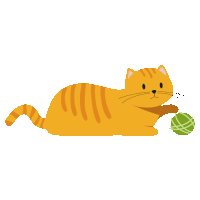

Mitten's Mansion
Cat's are very curious and playful animals. Some people who are involved with knitting or sewing
may not particularly like the fact that most cats are obsessed with string and yarn.
I have a few sewing projects I work on from time to time, and my cat Jeff is always paying very
close attention to the spools of thread and what I'm doing with them. On that note, if anyone
has a sewing machine that will go through a patch and 2 layers of denim I know someone who is looking.
I damaged the radial nerve in my right/dominant arm at the beginning of summer and only was back at 100 percent
around mid October. Hand sewing without function of your primary hand is a bear. Not fun at all.

Playing is crucial for cats because it fulfills their natural hunting instincts, provides essential exercise,
stimulates their minds, helps prevent boredom-related destructive behaviors, and strengthens the bond between
them and their owners, ultimately contributing to their overall physical and mental health, especially for indoor
cats who lack access to outdoor hunting opportunities. Key points about why cats need to play:
Mimicking natural behaviors:
Play allows cats to practice their predatory instincts like stalking, chasing, pouncing, and batting, which are
ingrained in their feline nature.
Physical health:
Regular playtime keeps cats active, helps maintain a healthy weight, and tones their muscles.
Mental stimulation:
Engaging in play challenges a cat's brain and prevents boredom, which can lead to behavioral issues.
Stress reduction:
Playtime acts as a stress reliever, helping to combat anxiety and promote relaxation.
Social bonding:
Interactive play sessions strengthen the relationship between a cat and their human companion.